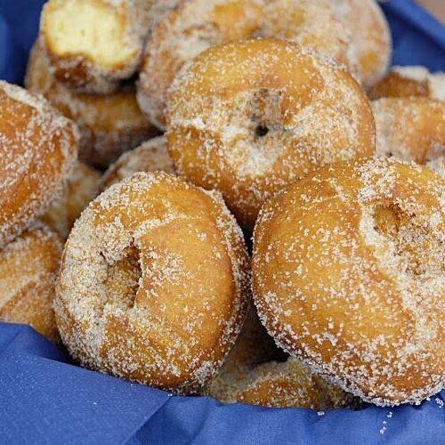

Muffins de plátano

Las rosquillas son uno de los dulces más tradicionales de la repostería casera. Su preparación es sencilla y el resultado es un postre perfecto para acompañar una taza de café, té o chocolate caliente. Además, puedes decorarlas con azúcar, canela o glaseado para darles un toque especial.